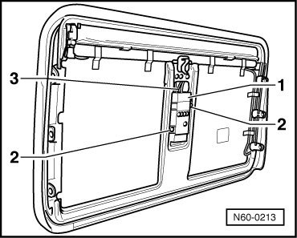

DC Voltage Converter
Sunroof with Solar Panel
DC Voltage Converter
Removing
- Sunroof Solar Panel
- Place solar panel on suitable surface, top face down to prevent damage.
- Remove the 2 screws - 2 -.

- Disconnect connector - 3 - from rear of DC voltage converter - 1 -.
Installation
- To install, perform the steps used for removal in reverse order.
- Tightening specifications for bolts: 2 Nm.